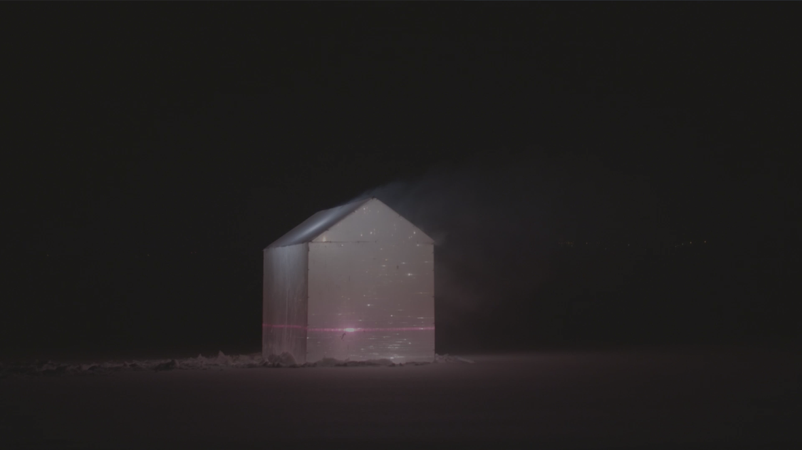
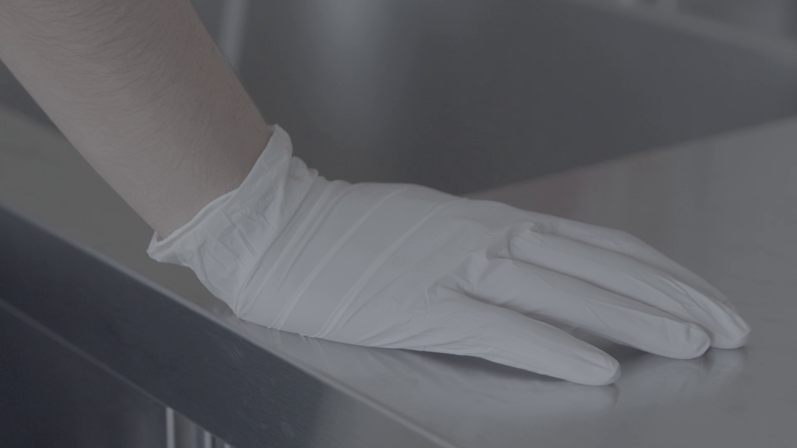
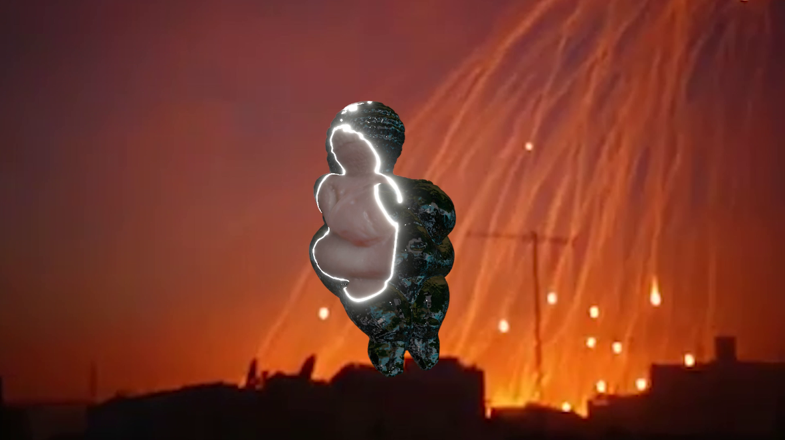
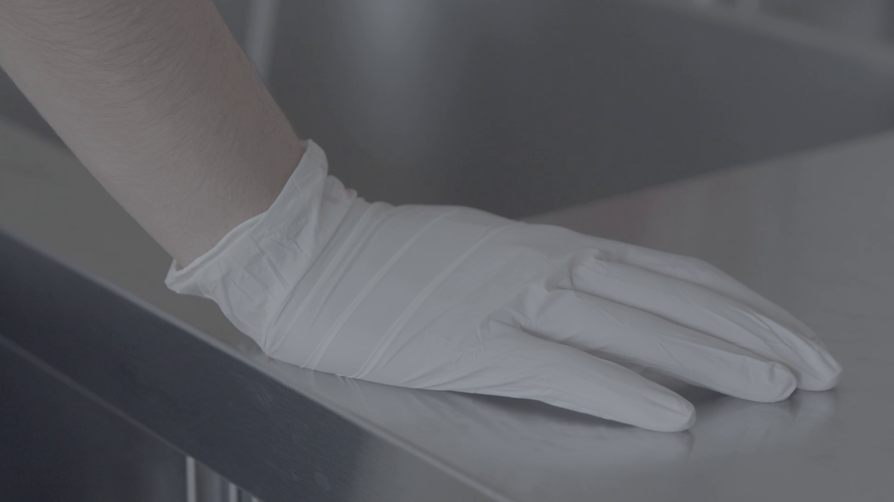
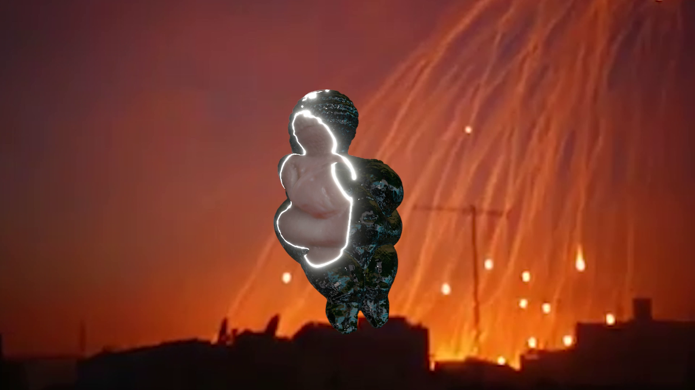
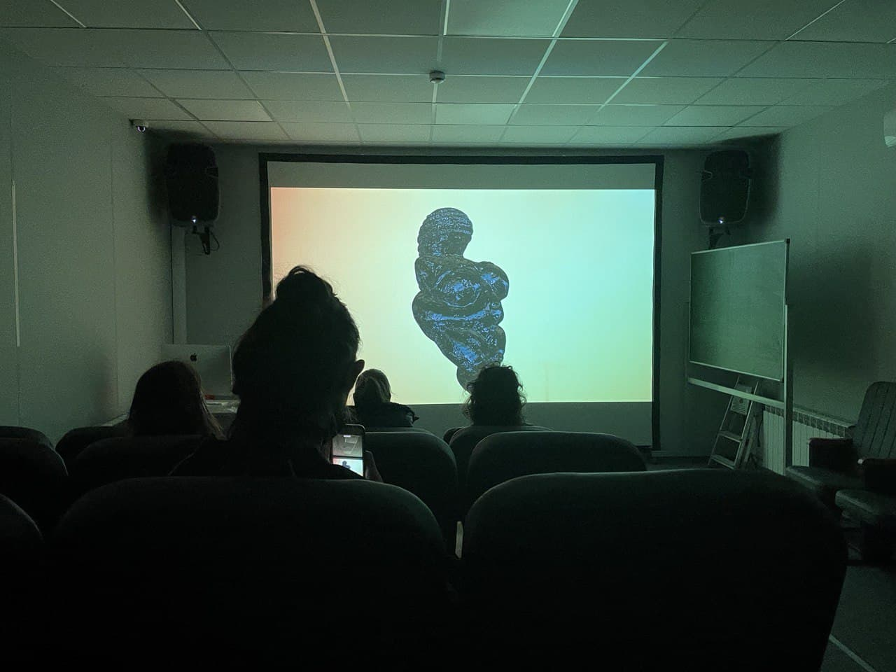
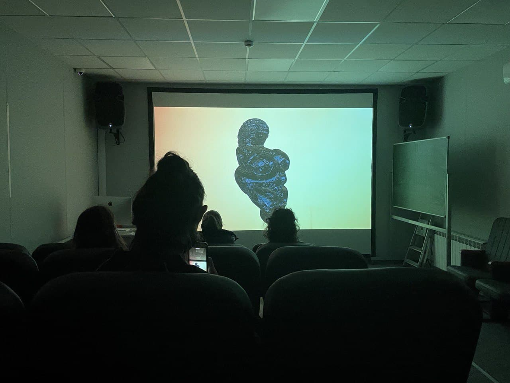

EN / RUS
Несущий Свет
Групповая выставка в Мастерские Музея «Гараж», 2022
Одноканальное HD-видео, 5 мин.
В соавторстве с Настей Никифоровой
В видеоэссе «Несущий свет», снятом в январе этого года, художницы передали
ощущение бессилия от невозможности повлиять на происходящие события и
наблюдения за несправедливостью. За почти полгода это парализующее состояние
отчаяния приобрело ужасающую конкретику и вошло в спектр повседневных эмоций.
Видеоряд работы состоит из тревожных образов, которые вызывают вопросы об их
происхождении. Сквозь перчатку виднеется рана — как она появилась на теле? Почему
заклеена скотчем? Что за огни в небе оставляют следы — праздничный салют или
снаряды? Поиски причин разрозненных явлений и индивидуальных, скрытых от
постороннего взгляда травм превращаются в поиск переломных моментов в
ощущениях, личных судьбах, истории.

 



 
